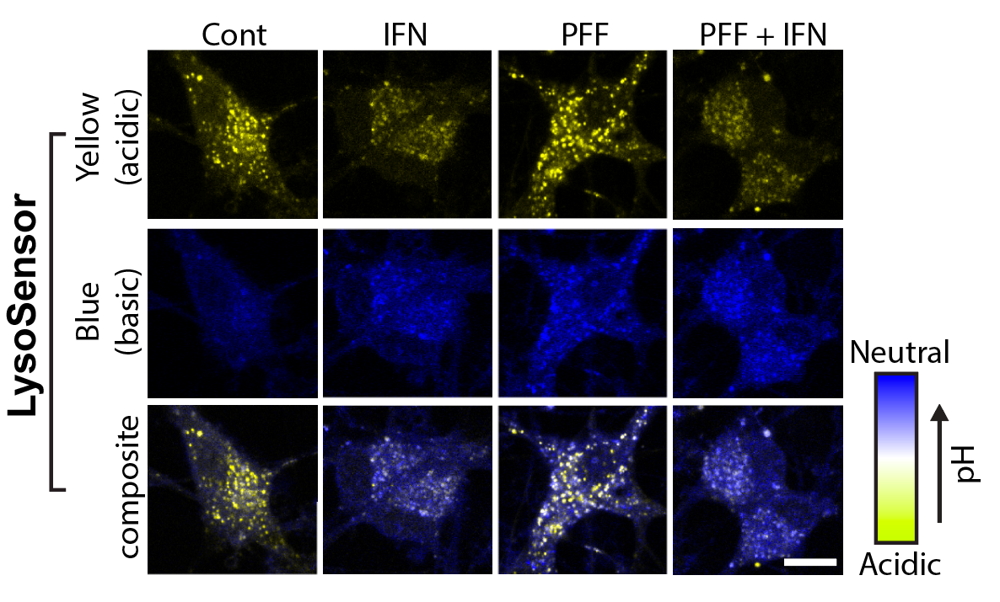
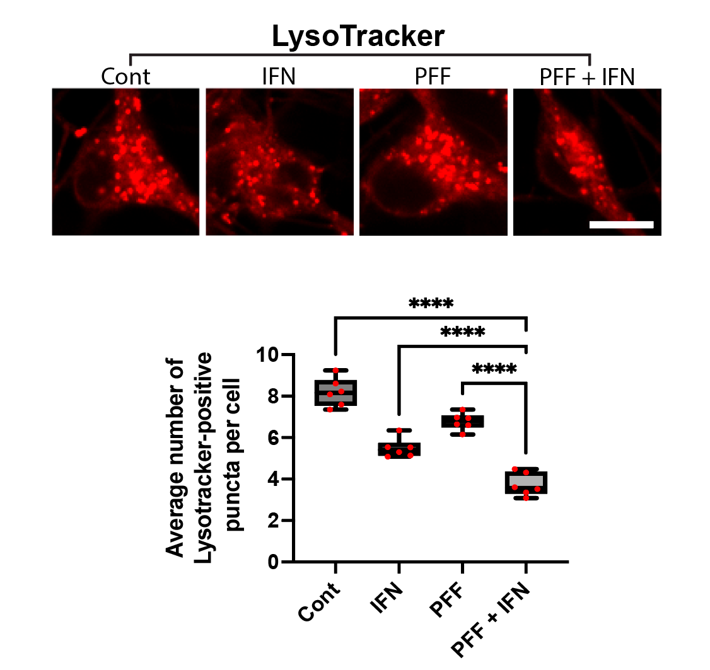

Live-Cell Imaging & Organelle Dynamics
I track mitochondrial clearance, Parkin translocation, lysosomal pH, and organelle fusion in real time using live-cell confocal microscopy. Assays include LysoSensor/LysoTracker staining for lysosomal integrity, MitoTracker for mitochondrial morphology, and calcium imaging for neuronal activity. GBA KO neurons display unique comet-like lysosomal morphology only visible in live recordings.

2
3
Autophagy flux monitoring via LC3B (green) and PFF (red) co-staining over 21 days. PFF-only treatment shows gradual LC3B+ autophagosome accumulation, while PFF + IFN-γ dual-hit dramatically accelerates LC3B dysfunction and PFF accumulation — reflecting impaired autophagic clearance of fibrils under inflammatory conditions. This time-resolved assay demonstrates progressive pathway collapse. Bayati et al., Nature Neuroscience 2024.